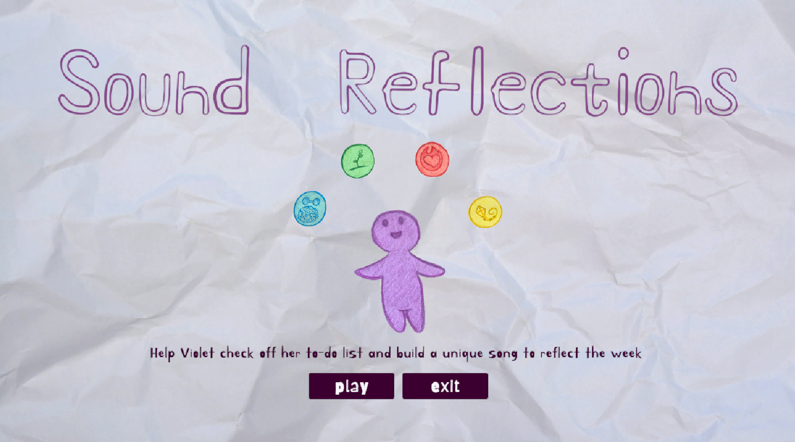

Sound Reflections

Project brief
As a team of six, create a game using the theme "balance". This game was started during a 2 day game jam run by Level Her Up, and was completed in the week following.
I did the programming for the game using Unity and C#, and created UI designs and animations.
Some of the features for the game include:
- orbs that spawn randomly from the top of the screen
- a click and drag effect on the orbs, to slot them into place in the checklist
- scores and sounds that are triggered when an orb is locked into a slot
- a randomly generated list of tasks for each day/round in the game
- a different song at the end of the game for each orb category (life domain) based on the players score
Sound Reflections is now available to play on itch.io!